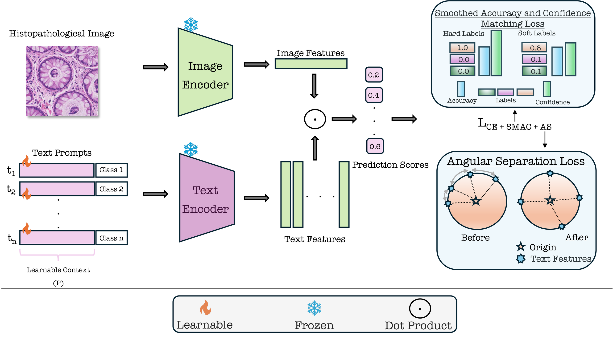
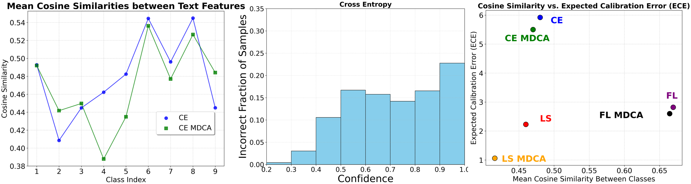
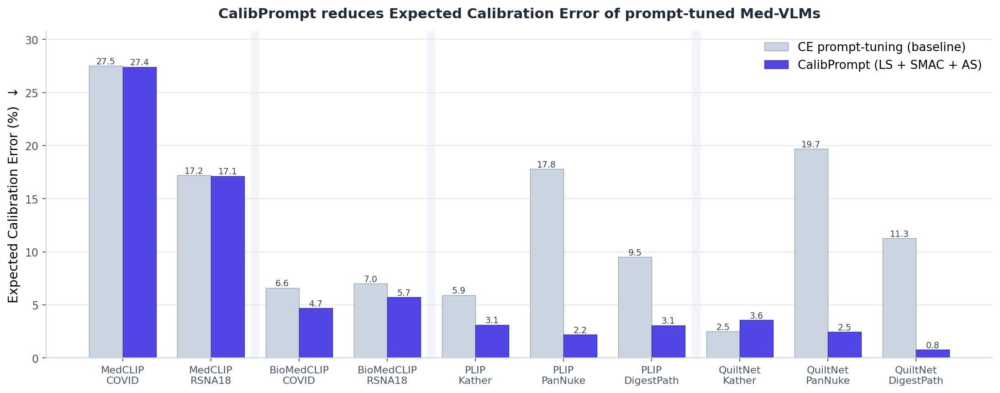
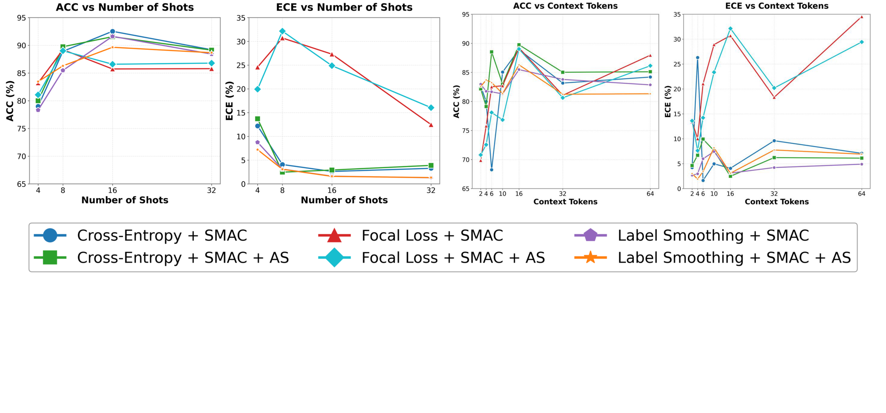

Abstract
Medical Vision-Language Models (Med-VLMs) have demonstrated remarkable performance across diverse medical imaging tasks by leveraging large-scale image-text pretraining. However, their confidence calibration is largely unexplored, and so remains a significant challenge. Miscalibrated predictions can lead to overconfident errors, undermining clinical trust and decision-making reliability. To address this, we introduce CalibPrompt, the first framework to calibrate Med-VLMs during prompt tuning. CalibPrompt optimizes a small set of learnable prompts with carefully designed calibration objectives under a scarce labeled-data regime. First, we study a regularizer that aligns the smoothed accuracy with the predicted model confidences. Second, we introduce an angular separation loss to maximize textual feature proximity toward improving the reliability of confidence estimates of multimodal Med-VLMs. Extensive experiments on four publicly available Med-VLMs and five diverse medical imaging datasets reveal that CalibPrompt consistently improves calibration without drastically affecting clean accuracy.
Method
🎯 SMAC
Smoothed Accuracy & Confidence Matching. Aligns each class's mean predicted confidence with a smoothed empirical class frequency, tolerating the inherent ambiguity of medical images instead of enforcing overly rigid calibration.
🧭 Angular Separation
AS loss. Minimizes the average pairwise cosine similarity of the class text prototypes, spreading them apart to counter the overconfidence that prompt tuning induces.

Results
CalibPrompt sharply reduces Expected Calibration Error (ECE) versus vanilla CE prompt tuning, across all four Med-VLMs and five datasets — while keeping accuracy intact. All numbers are exactly reproducible from the released code.

| ECE (%) ↓ | PLIP PanNuke | PLIP DigestPath | QuiltNet PanNuke | QuiltNet DigestPath | BioMedCLIP COVID | BioMedCLIP RSNA18 |
|---|---|---|---|---|---|---|
| CE prompt-tuning | 17.82 | 9.50 | 19.70 | 11.27 | 6.61 | 7.02 |
| CalibPrompt | 2.19 | 3.08 | 2.47 | 0.77 | 4.69 | 5.74 |

BibTeX
@inproceedings{Basu_2025_BMVC,
author = {Abhishek Basu and Fahad Shamshad and Ashshak Sharifdeen and Karthik Nandakumar and Muhammad Haris Khan},
title = {Calibration-Aware Prompt Learning for Medical Vision-Language Models},
booktitle = {36th British Machine Vision Conference 2025, BMVC 2025, Sheffield, UK, November 24-27, 2025},
publisher = {BMVA},
year = {2025},
url = {https://bmva-archive.org.uk/bmvc/2025/assets/papers/Paper_1062/paper.pdf}
}